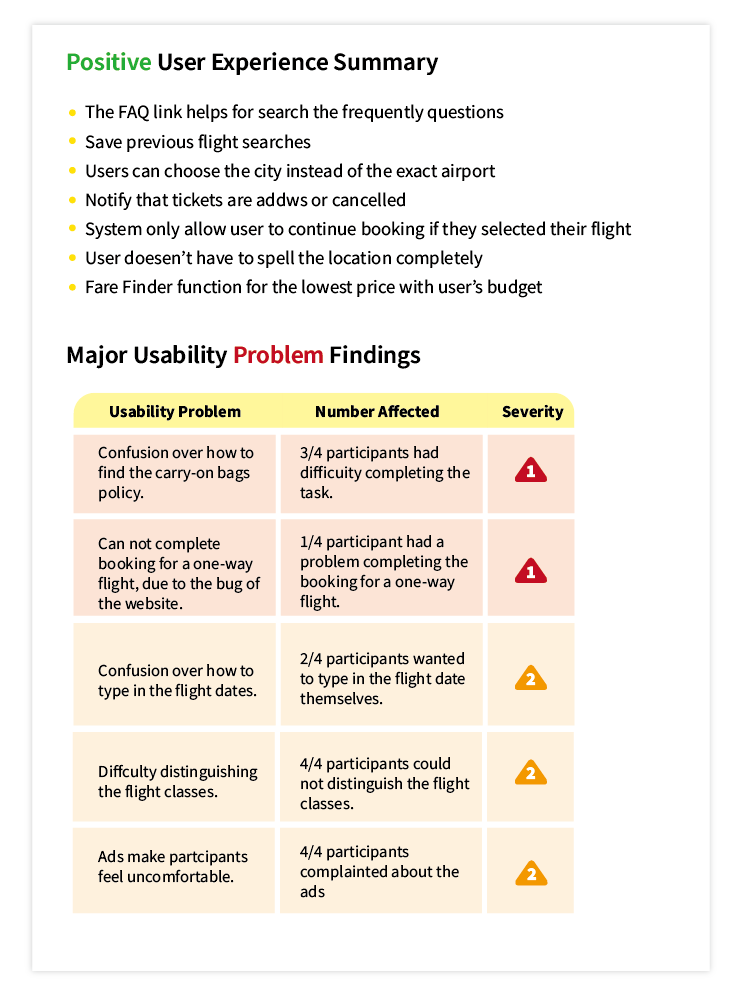

Usability Testing
Usability testing is a way to see how easy to use something is by testing it with real users.
Usability testing is a way to see how easy to use something is by testing it with real users.
Users are asked to complete tasks, typically while they are being observed by a researcher, to see where they encounter problems and experience confusion. — ExperienceUx
TEAM
Sara Cheng, Hanjing Gong, Chih-ling Kuo, Jiyun Park, Yixuan Wu
DATE
November 12 to 14, 2018
SKILL
User interview
Formal usability testing
Eyetracking system- Tobii
CONTEXT
The Ryanair company would like to know how they can improve the overall user experience for new and returning customers.Determine what features worked, and what features could be improved upon.
In order to accomplish this agenda, we conducted a usability test. The purpose of this test was to test and validate the usability of Ryanair’s website and provide a quantitative analysis of the site’s usability.
Introduction of RyanAir
RyanAir
Ryanair is Europe’s Number 1 airline, carrying over 130m customers p.a. on more than 2,000 daily flights from 86 bases, connecting 215 destinations in 37 countries on a fleet of 430 Boeing 737 aircraft.
The website page of RyanAir
EXECUTIVE SUMMARY
Photo by rawpixel on Unsplash
We first performed a heuristics evaluation on Ryanair’s website following Nielsen's 10 heuristics in order to find any heuristics violation and to become familiar with the website.
Afterwards, a usability test for Ryanair’s website was conducted with 4 participants of the target group in Humber’s usability lab where they were instructed to complete 3 primary tasks in relation to a given scenario.
Overall, based on our usability test findings we determined that the majority of the participants struggled to complete task 2: finding carry-on baggage information. For task 1 and task 3, they encountered some issues, but they managed to complete the task in the end.
TEST OBJECTIVES
Our objectives for the usability test were to evaluate the website relative to the user’s ability to complete the 3 primary tasks:
1. Book a round-trip flight
2. Search for carry-on baggage information
3. Book a one-way flight trip with the absolute lowest price
Determine what features on Ryanair’s website worked and what needed improvements.
Learn how users navigate through the website and how they complete a task given a certain scenario.
Find ways to improve the overall user experience of the site.
METHODOLOGY
Humber College’s Usability Lab
∙
A usability test was conducted from November 12 to 14, 2018
∙
The usability test was conducted at the Humber College’s Usability Lab
∙
We recruited 4 participants who fit our screening critieria
∙
The Tobii eye tracker was used to record the participant’s eye tracking activities, their computer screen, and the audio.
∙
Three tasks were given to participants, SEQ and post-task questionnaire was completed after each task
∙
The SUS questionnaire was administred after the test
Testing Process
What is Tobii?
Tobbi is the eye-tracking device allowed us to analyze where the participants’ attention was as they were completing the task. The Tobii software recorded the user’s screen, audio, and eye-tracking activities. Including heat map and eye gaze analyses.
Picture from Tobii.com
Tobii on the screen
Eyetracking value in UX Process
Eye tracking provides compelling objective data that reveals the human behavior behind usability problems. User Experience (UX) researchers use this methodology to evaluate interfaces for the optimal user experience.—Tobiipro.com
Why use eye tracking in Usability?
Usability and design are profound influences on user satisfaction and, ultimately, business success. Diagnosing usability problems is simple by integrating eye tracking into your product development cycle.—Tobiipro.com
Analysis Phase
Scan Paths
The Tobii systems follow the user's eyes with fantastic accuracy. Let us know where the participant was looking on the screen. The red dot will stretch when the user stares in the spot longer. When the user moved her gaze, the systems will show us a red line link to the next place she looks.

Heat Map
Heat Map
The data is presented by using colours and makes it become a visualize data and easily understood. The idea behind a heat map is to track where users are spending time on any given page. The user spending more time the colours of the area will become red. In this picture, the user was not spending much time on this page, only a few spots having red colours.
Fixation Points
Fixation points are areas in which a user’s gaze stops moving, lingering long enough for them to process what they’ve seen. -Neil Dawson
As you can see, in this picture, the user is more likely to see the banner on the top of the page. Also, the user has more fixation points on the navigation bar and search engine.Furthermore, we can notice that the lower the position of the page, the less likely it is to be gazing.
Fixation Points
Results

SEQ, POST-TASK & SUS SUMMARY

Recommendations
1. Reduce the number of advertisements that are on the website.
2. Provide users with the ability to modify their flight details at every point in the booking process.
3. Improve findability of luggage policies on the website and providing understandability pictures instead of using large content of text.
4. Consider changing the wording become simple and easier to understand for non-English speakers.
5. Fix the bug for typing the departing/return date and for the booking process of the flight ticket.
Reflections

Photo by José Alejandro Cuffia on unsplash